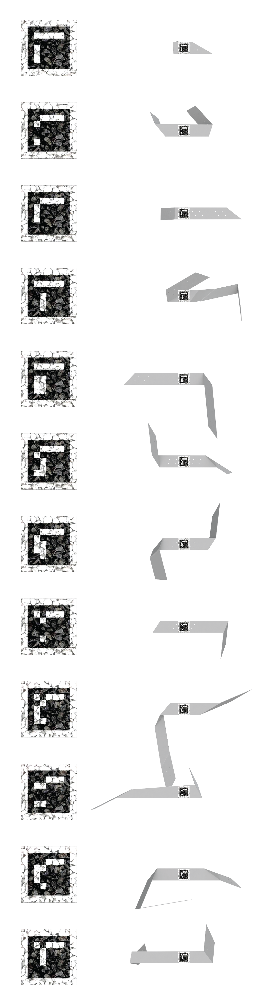

Year: 2018
Project: Develop software prototype in Unity 3D utilizing Hololens SDK and Vuforia image tag recognition library
Role: Coder, Developer, 3d Designer
Video capture from Hololens headset demonstrating the functionality
of the prototype. In real life, Hololens camera should see the
image tag to recognize the part. For the demonstration image on the
phone screen was used as a substitute for the graphics. The image
tag must be in the field of view on Hololens camera to recognize the part.
In the practical application of augmented reality on construction
site, serious consideration must be given to the interface. The wireframe
representation will be more favorable for the consideration of safety and
clear sight. Not more than 2% of the vision must be allowed to use with
holographic shading. Safety must take priority in using augmented reality
headsets on construction site.
Diagram showing the location and fastening of each part. The most value from using holographic assembly guide could be realized in complex assembly of unique parts that look similar. A viable application would be art and interior installations with many parts where the coordination of the assembly is the main priority and the pain point.
Assembly parts should have clear image tag identification fro Hololens to recognize the unique part.